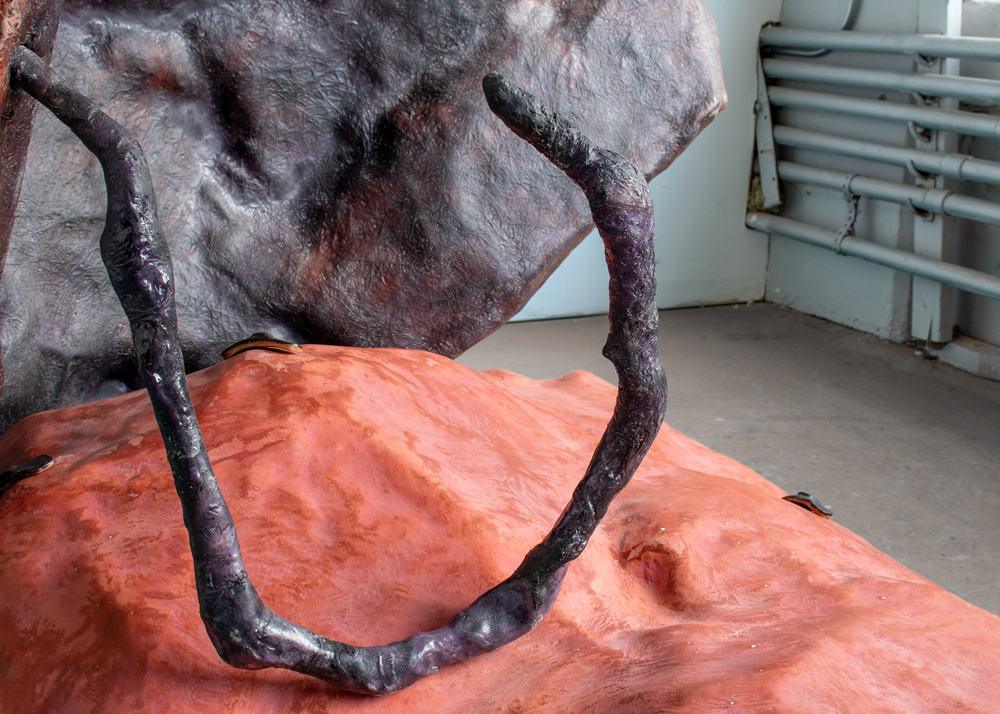
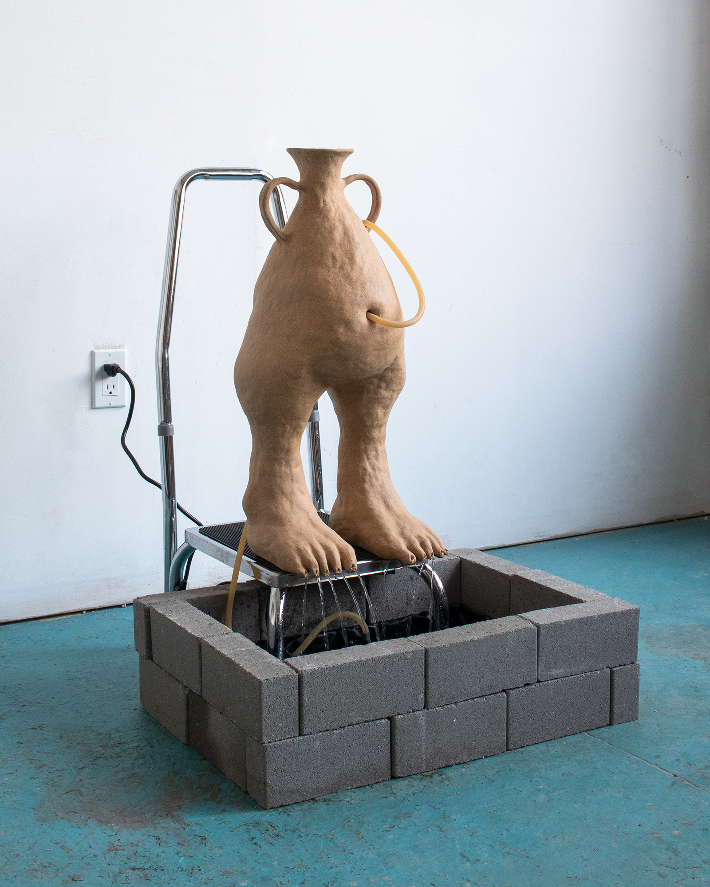
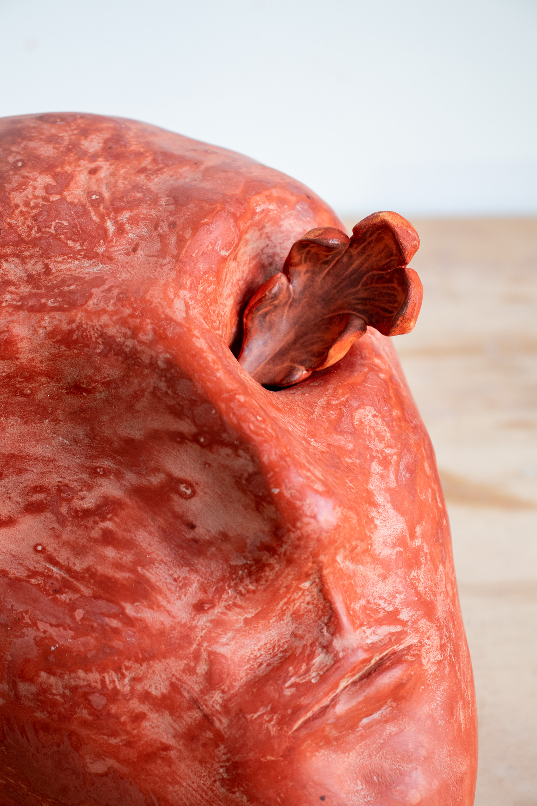
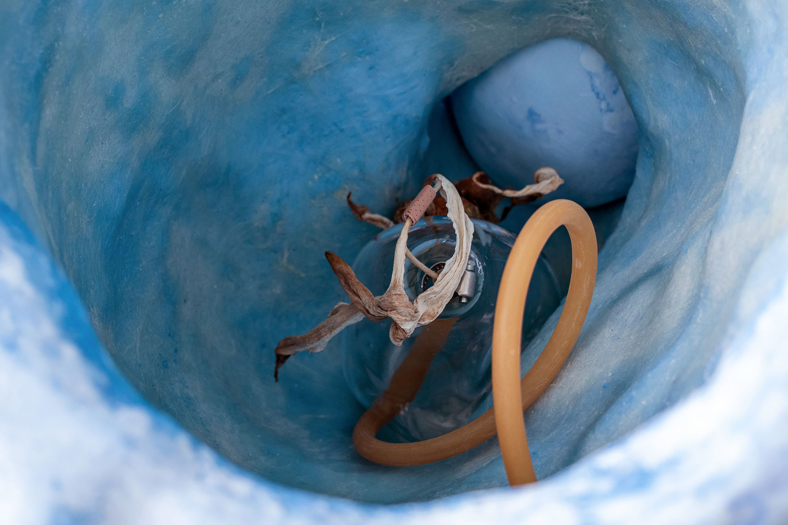
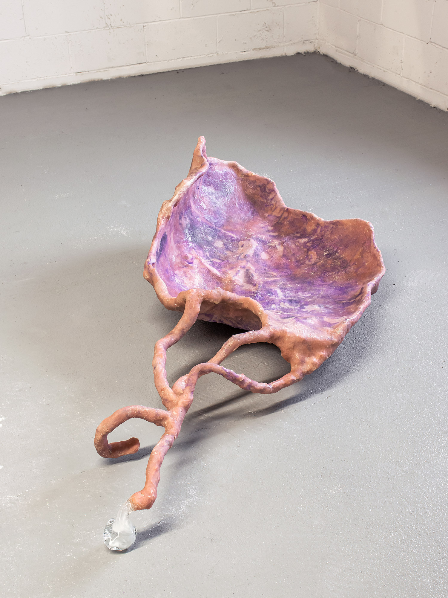
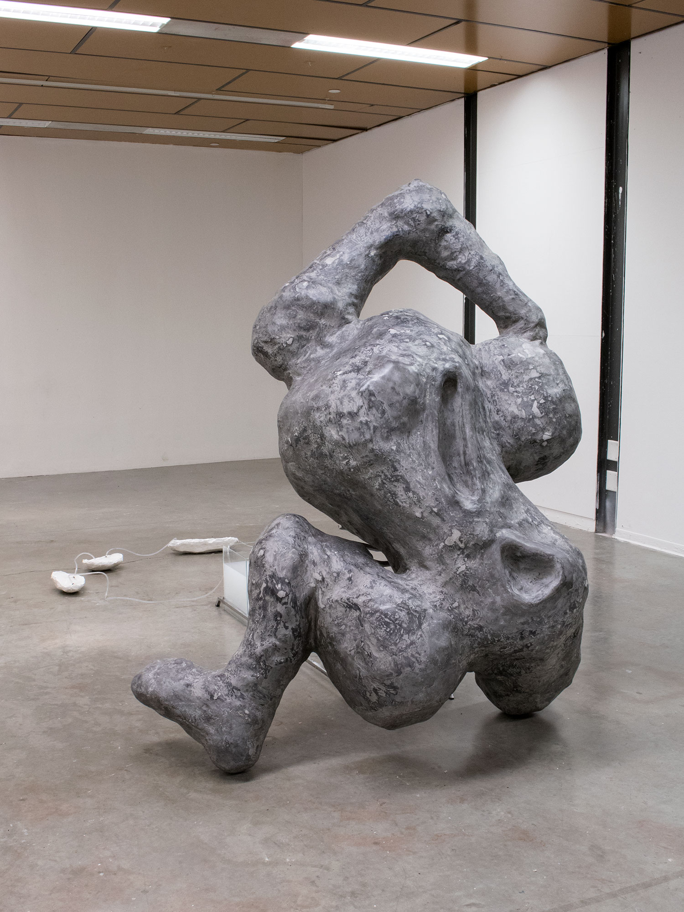
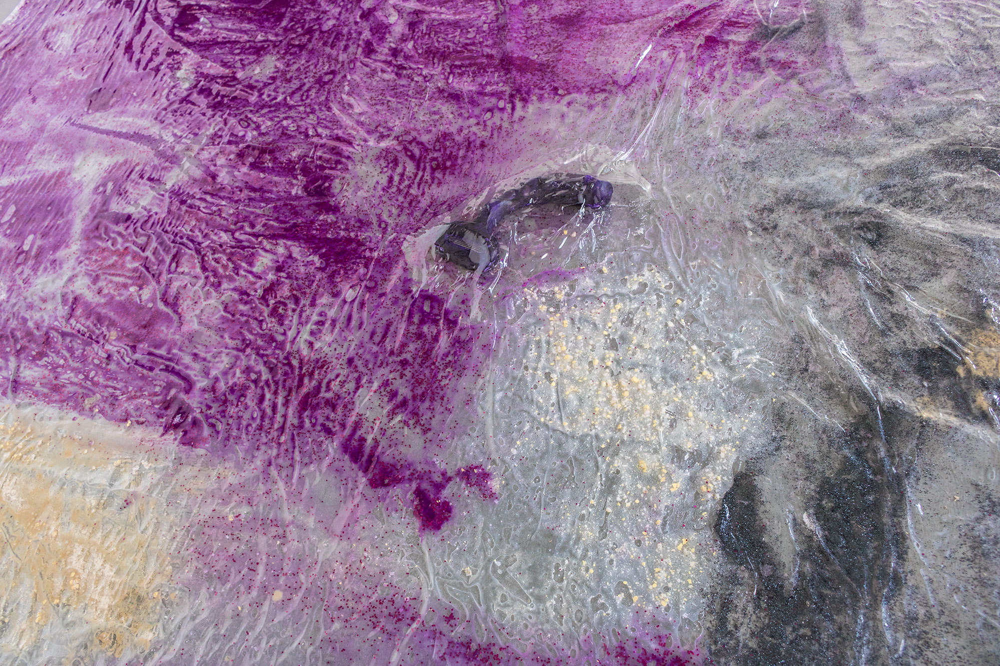
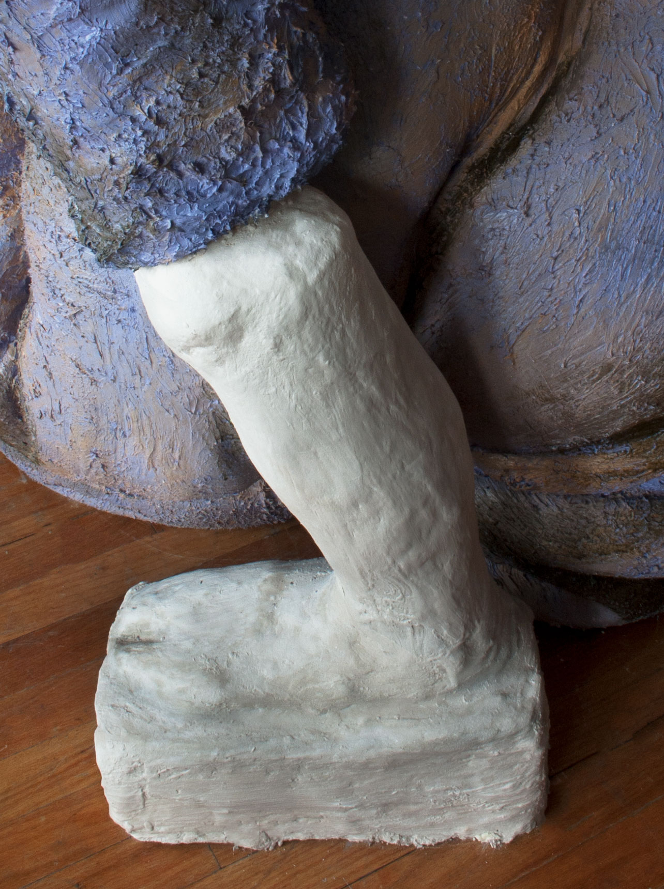

<div id="imagegrid" class="grid mb-5"
     data-masonry='{ "itemSelector": ".grid-item", "columnWidth": ".grid-sizer", "percentPosition": "true" }'>
  <div class="grid-sizer"></div>
  <div class="grid-item"><a href="work/soft-shelled-ego.html"></a></div>
  <div class="grid-item"><a href="work/look-at-her-tears.html"></a></div>
  <div class="grid-item"><a href="work/lubbert-as-muse.html"></a></div>
  <div class="grid-item"><a href="work/ceramic-fragments.html"></a></div>
  <div class="grid-item"><a href="work/out-of-the-mouth.html"></a></div>
  <div class="grid-item"><a href="work/tepal.html"></a></div>
  <div class="grid-item"><a href="work/cutting-the-stone.html"></a></div>
  <div class="grid-item"><a href="work/fountain.html"></a></div>
  <div class="grid-item"><a href="work/cortices.html"></a></div>
  <div class="grid-item"><a href="work/gameboard.html"></a></div>
  <div class="grid-item"><a href="work/meeting-stasis-halfway.html"></a></div>
  <div class="grid-item"><a href="work/well-im-a-tumbler.html"></a></div>
  <div class="grid-item"><a href="work/assessing-my-shape.html"></a></div>
  <div class="grid-item"><a href="work/aspirational-prosthetics.html"></a></div>
</div>